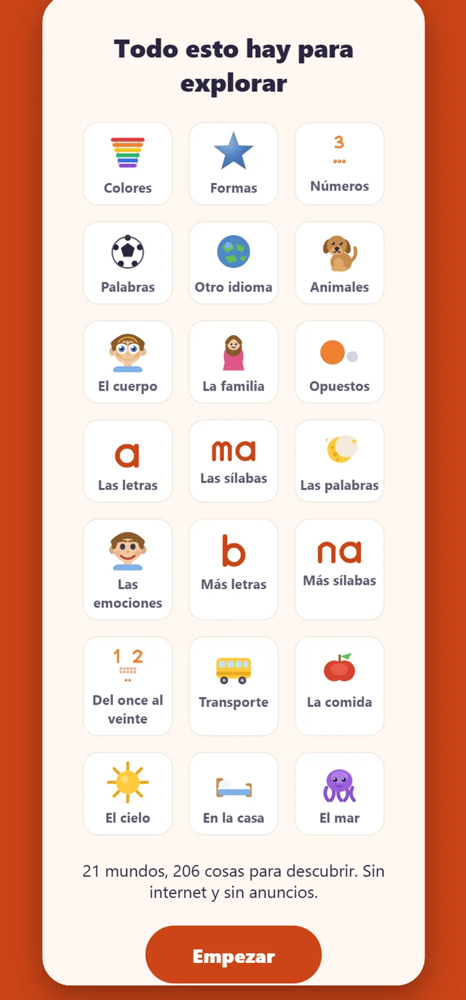
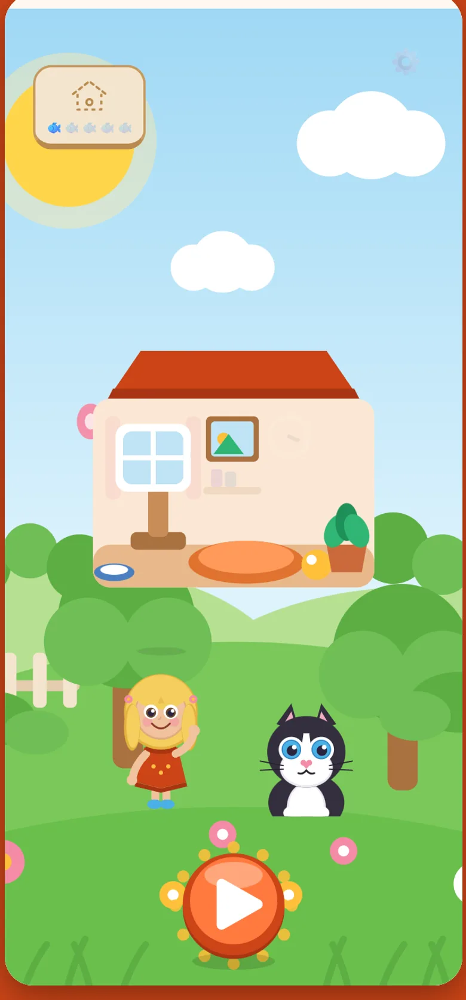
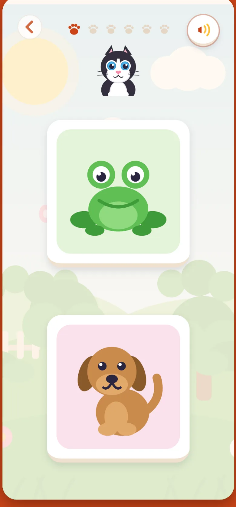
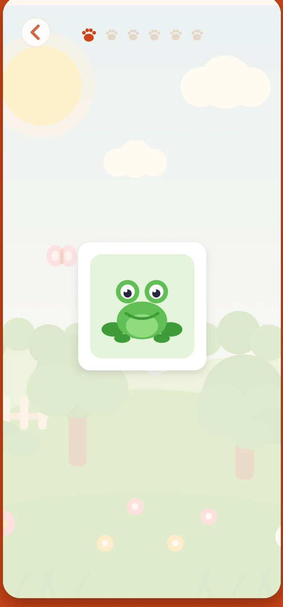
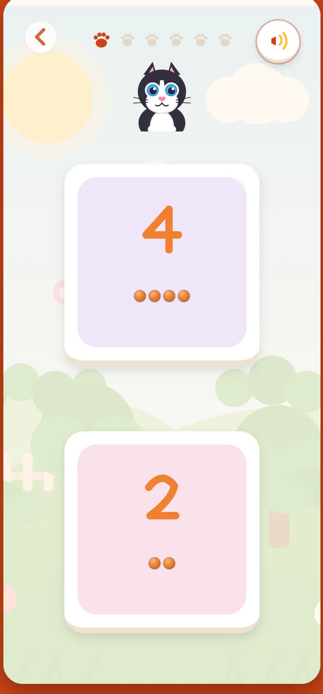
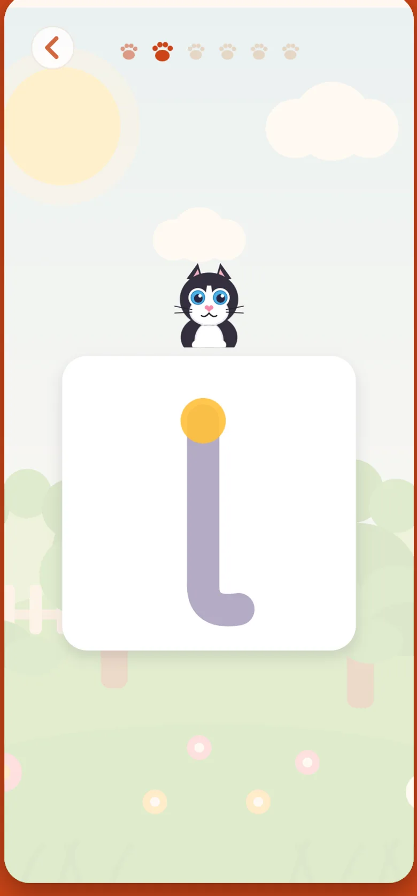
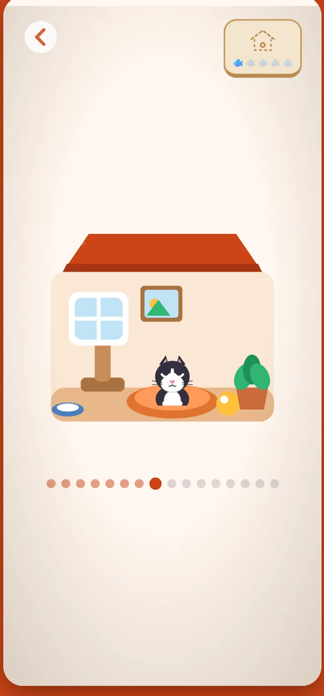
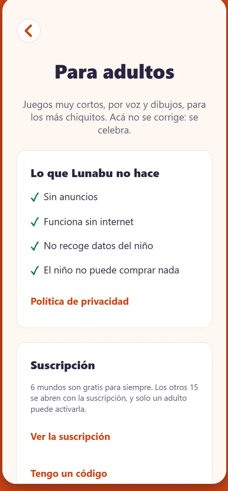

Qué descubre
Veintiún mundos, y ninguno pide saber leer.
Una niña llamada Martina le nombra todo en voz alta y él solo toca lo que ve. No hay menús que leer, ni instrucciones, ni un botón que diga «continuar»: hay un dibujo grande y una voz que lo llama por su nombre.
-
Gratis para siempre6 mundos · 49 cartasColoresFormasNúmerosPalabrasAnimalesLa familia
-
Antes de leerletras, sílabas y palabrasLas letrasMás letrasLas sílabasMás sílabasArmar palabrasOtro idioma
-
El mundo alrededorpara cuando crezcaLas emocionesEl cuerpoOpuestosDel once al veinteTransporteLa comidaEl cieloEn la casaEl mar
Por dentro
Así se ve.








La razón por la que vuelve
Hay una gata esperando en casa.
El premio no es una estrella en una pantalla: es Lunita. Cada rato de juego le trae comida, y con la comida se le arma la casa pieza por pieza —la ventana, la lámpara, la camita, la chimenea que humea—. Vuelve mañana y hay un poquito más.
-
La casa solo crece
Nunca se cae y nunca se pierde. No hay racha que romper ni nada que se apague por no volver: si pasa una semana, sigue todo donde estaba.
-
Y se la puede acariciar
Lunita ronronea, salta y le salen corazoncitos. De noche duerme en el patio hasta que la despiertan. Esa es la razón por la que un niño de tres años pide la app al día siguiente.
-
Acá no se corrige
No hay cruces rojas, ni vidas, ni puntaje. A esta edad equivocarse no es un error: es probar. Cuando acierta hay fiesta; cuando no, la respuesta se vuelve a mostrar y se sigue.
Para el papá o la mamá
Lo que no vas a encontrar.
-
Sin publicidad
Ninguna, en ninguna parte. Un niño de tres años no distingue un anuncio de un juego, así que acá no hay que distinguir nada.
-
Sin recolectar datos
Ni nombre, ni edad, ni correo, ni ubicación. No hay servidor al que mandar nada y no se pide registro: se abre y se usa.
-
Sin nada que pueda comprar
No hay un solo botón de pago en las pantallas del niño. Lo que se paga vive detrás de la barrera de adultos, donde él no llega ni por accidente.
Lo que sí vas a encontrar
Dos minutos, y se despide sola.
La sesión dura lo que a esta edad rinde de verdad: seis rondas cortas y listo. Vos fijás cuántos minutos por día, y cuando se cumplen la app se despide. No existe la pantalla que ruega quedarse.
-
Detrás de una puerta
El tiempo de juego, el idioma, la voz y qué mundos fue explorando, todo detrás de una barrera que el niño no pasa solo. Entrás con tu huella si querés.
-
Con voz propia en los tres idiomas
Español, inglés y portugués, y la voz viene dentro de la app: suena igual en un celular caro y en uno barato, y suena aunque el teléfono no tenga ninguna voz instalada.
-
También en silencio
Si preferís jugar sin sonido, se apaga la voz y las tarjetas muestran su nombre por escrito. Y funciona con el lector de pantalla encendido.
Cuánto cuesta
Seis mundos gratis, y no se vencen.
Gratis para siempre
Colores, formas, números, palabras, animales y la familia:
49 cartas, los seis mundos que usa un niño de dos o tres años, completos y sin
recortes.
Los otros quince —las letras, las sílabas, las emociones, contar hasta veinte, el
transporte, el mar— no son lo que le faltaba: son lo que va a necesitar el año que
viene. Se abren con una suscripción que solo activa un adulto, detrás de la barrera,
y se cancela cuando quieras desde Google Play. Lo que ya jugaba gratis sigue gratis,
pagues o no.
Aprende sin darse cuenta de que aprende.
A los tres años nadie estudia. Se mira, se escucha y se toca — y con eso alcanza, si lo que mira está bien elegido y quien lo nombra no se cansa nunca.
Todavía no está en Google Play Lunabu está en prueba cerrada. Cuando salga a la tienda, el botón de descarga va acá.